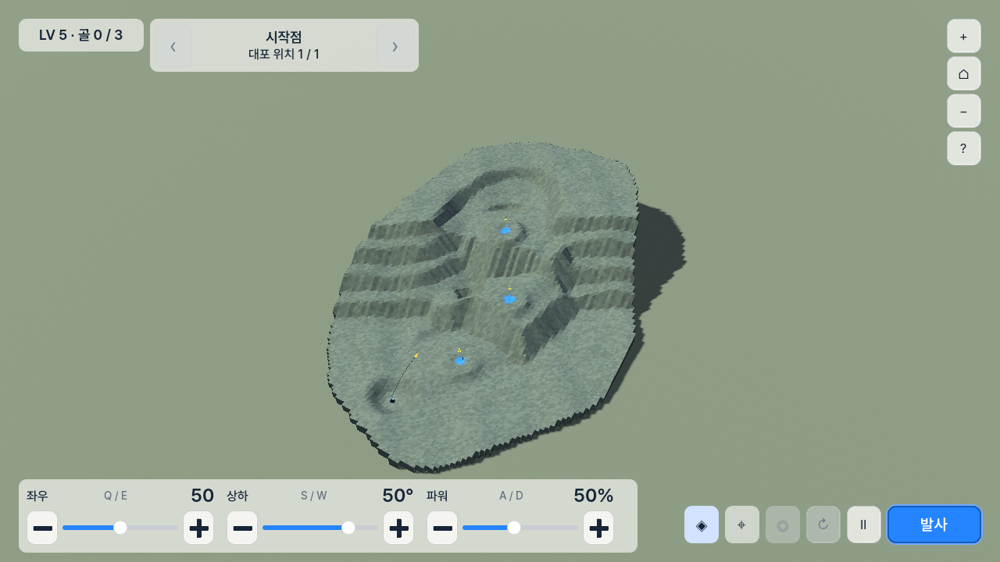
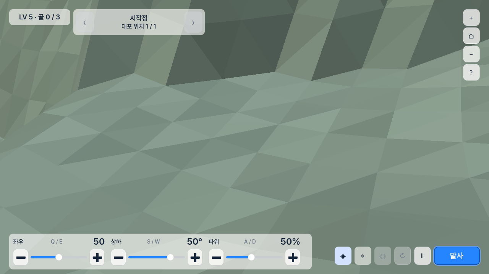
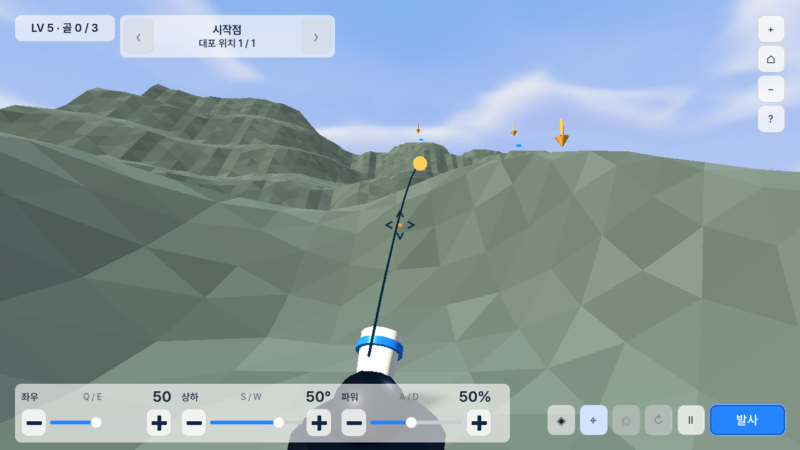
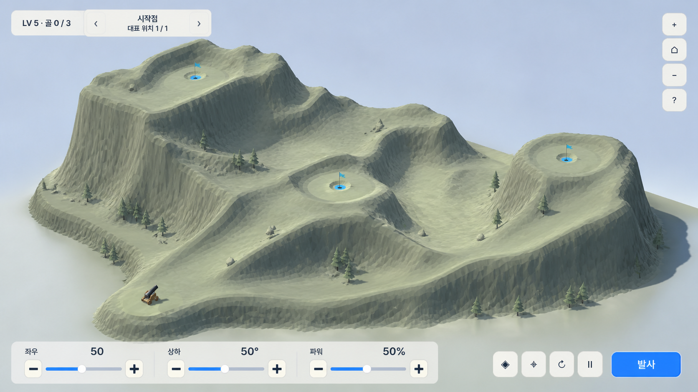
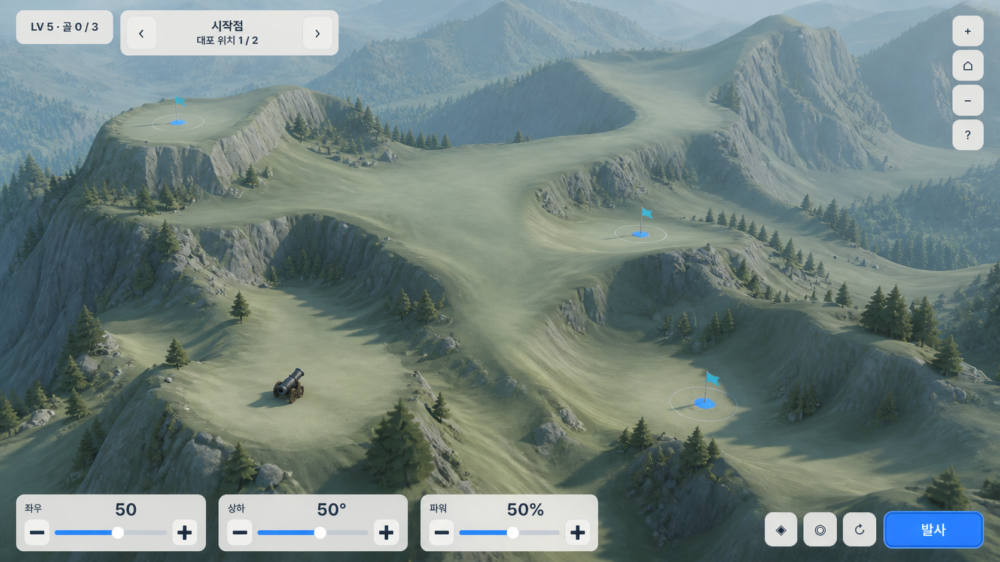
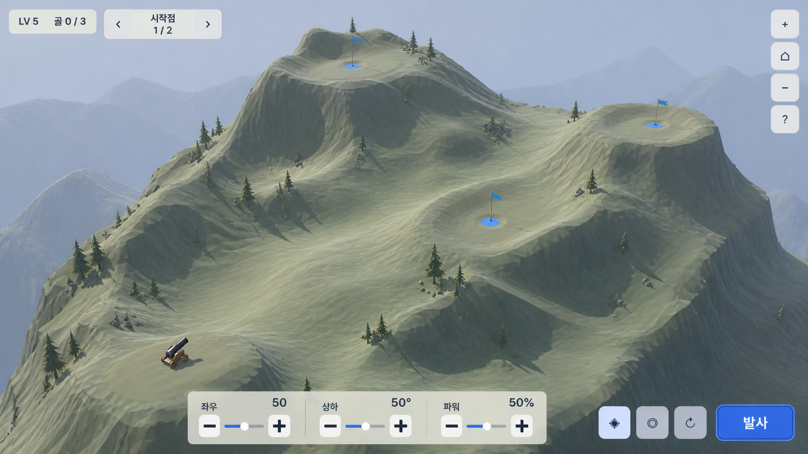

거칠기는 두 문제가 겹친 결과다
trajectory_course_generator.gd는 코스가 커져도84 × 128셀 수를 유지한다. 따라서 한 셀이 더 커진다.terrain_geometry_factory.gd는 삼각형마다 정점을 복제하고 면 법선을 넣는다. 셰이더의 삼각형별 색 변화까지 더해져 모든 면이 강조된다.
Cannon Golf · design research · 2026-08-16
현재 코드와 실제 LV1·LV5·LV10 렌더를 확인하고, 지형 생성·메시 처리·카메라·난이도·게임 HUD를 함께 분석했다. 결론은 단순히 폴리곤 수를 늘리는 것이 아니라, 지형의 구조·표본 밀도·표면 표현·카메라·난이도 변수를 분리해서 설계해야 한다는 것이다.
01 · current evidence
fresh capture harness로 같은 빌드의 LV5를 다시 캡처했다. 전체 보기, 최대 확대, 대포 시점이 서로 다른 문제를 분명하게 보여 준다.



trajectory_course_generator.gd는 코스가 커져도 84 × 128 셀 수를 유지한다. 따라서 한 셀이 더 커진다.terrain_geometry_factory.gd는 삼각형마다 정점을 복제하고 면 법선을 넣는다. 셰이더의 삼각형별 색 변화까지 더해져 모든 면이 강조된다.LV10의 실측 생성 범위는 LV1보다 크다. 그러나 전체 보기 카메라가 항상 코스를 화면에 맞추므로 화면 속 코스 크기는 비슷하다. 나무·바위 같은 기준물도 거의 없어 실제 거리 차이가 축약된다.
| 레벨 | 목표 수 | 생성 범위 X × Z | 고저차 | 셀 간격 | 목표 간 평균 거리 |
|---|---|---|---|---|---|
| LV1 | 1 | 415 × 243 m | 78.6 m | 5.06 m | 해당 없음 |
| LV3 | 2 | 437 × 635 m | 84.6 m | 5.33 m | 163.7 m |
| LV5 | 3 | 479 × 695 m | 135.0 m | 5.84 m | 172.8 m |
| LV8 | 4 | 562 × 850 m | 179.4 m | 6.85 m | 243.7 m |
| LV10 | 6 | 623 × 942 m | 223.6 m | 7.59 m | 238.4 m |
DESIGN_RULES.md는 지형의 명확한 faceting을 보존하도록 적혀 있다. 사용자의 최신 지시는 표면을 더 부드럽게 만드는 것이므로, 구현 전에 이 문구를 “플레이 면은 부드럽게, 절벽·외곽 실루엣에만 제한적으로 면 분할을 유지”로 고쳐야 한다.
02 · terrain system
산의 큰 구조와 공이 굴러가는 표면, 화면에 보이는 음영을 서로 다른 단계로 다뤄야 한다. 그래야 고저차를 유지하면서도 울퉁불퉁한 삼각형 표면만 줄일 수 있다.
능선·골짜기·분지·발사 지점을 곡선 네트워크로 먼저 정한다. 큰 산형을 먼저 만들고, 곡선 사이를 diffusion/Poisson 계열 보간으로 채운다.
대포, 목표 분지, 의도한 탄도 통로는 정확한 높이·경사 제약으로 보호한다. 나머지 영역만 비수축 평활화에 가까운 필터를 제한적으로 적용한다.
공유 정점과 평균 법선을 사용해 플레이 면을 부드럽게 보이게 한다. 절벽 경계에서는 정점/법선을 분리하고, 삼각형별 무작위 색 차이는 크게 줄인다.
03 · map scale & difficulty
현재 레벨 인덱스는 목표 수, 지형 높이, 규모, 밀도를 한꺼번에 올린다. 반면 CourseData.difficulty_targets는 비어 있고 실제 생성에서 쓰이지 않는다. 난이도를 여러 축으로 명시해야 “크지만 정상적인” 맵이 된다.
| 축 | 의미 | 권장 사용법 |
|---|---|---|
| 발사 거리 사용률 | 대포의 인증된 도달 범위 중 얼마를 쓰는가 | 초반은 여유 있게, 후반은 길게. 도달 가능성 검사와 항상 연결한다. |
| 목표 간 거리 | 목표들이 화면과 공간에서 얼마나 분리되는가 | LV3–4 약 180–260 m, LV5–7 약 220–320 m, LV8–10 약 240–380 m를 시작 범위로 검증한다. |
| 수직 차이 | 발사점과 목표 사이 높이 차 | 거리와 동시에 최대치로 올리지 않는다. 한 레벨에서 주 난점은 1–2개로 제한한다. |
| 방위 변화 | 연속 목표가 좌우로 얼마나 갈라지는가 | 대포 위치 전환과 결합해 공간 계획을 만든다. |
| 목표 허용도 | 분지 크기와 성공 가능한 해의 폭 | 초반은 넓고 안정적인 분지, 후반은 작되 시각적으로는 항상 선명하게 한다. |
| 순서·대포 의존성 | 어떤 대포에서 어떤 목표를 노리는가 | 새 메커니즘 없이도 후반 난이도를 만들 수 있다. |
04 · HUD & UIUX
현재 HUD는 기능은 갖췄지만 하단 면적이 크고, 값·라벨·키 힌트가 분산되어 있으며, 카메라 버튼이 여러 위치에 흩어져 있다. 월드를 가리는 면적을 줄이는 동시에 입력의 의미는 더 직접적으로 만들어야 한다.
LV / 골 진행 / 대포 위치를 한 묶음으로 둔다. 드롭다운은 쓰지 않고 이미 결정된 좌우 화살표 방식만 유지한다.
좌우·상하·파워마다 라벨과 값을 붙여 읽게 한다. 각 모듈은 − / 짧은 슬라이더 / + 구조를 유지하되 키 힌트는 보조층으로 낮춘다.
카메라 동작은 한 군데에 모으고 현재 시점에서 쓸 수 없는 기능은 숨긴다. 발사만 강한 파란색 주 행동으로 남긴다.
05 · three visual directions
아래 이미지는 현재 LV5 화면과 승인된 지형 진행 이미지를 입력으로 사용한 방향 시안이다. 구현 결과를 보장하는 픽셀 사양이 아니라, 지형 밀도·공간감·HUD 비중의 선택지를 비교하기 위한 기준 이미지다.
현재의 밝은 종이 패널과 저채도 지형을 유지하면서, 큰 산형과 넓은 목표 간격을 적용한다. 하단 조작부는 하나의 얕은 rail로 정리한다. 기존 코드와 디자인의 연속성이 가장 높다.

능선과 계곡의 큰 흐름, 나무와 바위의 크기 기준, 먼 지형의 대비 감소를 적극 사용한다. 목표가 멀리 떨어져도 같은 코스에 연결되어 있다는 점이 가장 잘 보인다. 조작부는 세 개의 독립 모듈로 분리한다.

하단 조작부를 중앙의 작은 계기판으로 압축한다. 화면 가장자리의 정보량이 가장 적고 지형이 넓게 보인다. 빠른 반복 발사에는 유리하지만, 값 조정 영역이 과도하게 작아지지 않도록 실제 1280 × 720 기준 검증이 필요하다.

06 · definitive recommendation
HUD는 1안이 현재 제품과 가장 잘 연결된다. 지형은 2안처럼 넓은 능선·골짜기 흐름과 일정한 크기의 나무·바위, 먼 능선의 낮은 대비를 사용한다. 3안의 작은 HUD는 참고하되, 조작 정확도를 희생할 정도로 압축하지 않는다.
07 · implementation outline
아래는 다음 구현 작업의 경계다. 이번 보고서에서는 실행하지 않았다. 각 단계는 이전 단계의 시각·물리 조건을 통과한 뒤 진행해야 한다.
DESIGN_RULES.md의 faceting 문구를 최신 지시와 맞추고, 플레이 면/절벽의 표현 규칙을 분리한다.difficulty_targets를 거리·높이·방위·목표 허용도·대포 의존성 벡터로 사용한다.08 · external evidence
일반적인 게임 참고 이미지보다, 구현 선택을 직접 설명할 수 있는 엔진 문서·원 논문·접근성 지침을 우선했다.
09 · limits